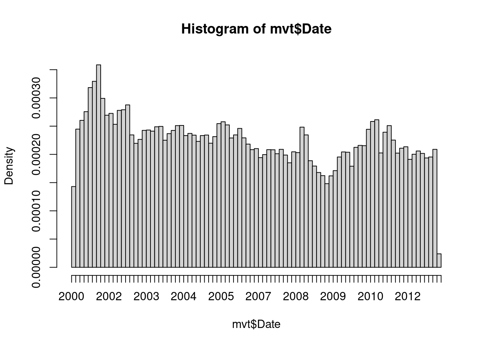

mvt <- read.csv("mvtWeek1.csv")analyticsedge
Assignment 1 Answers
An Analytical Detective
There are two main types of crimes: violent crimes, and property crimes. In this problem, we’ll focus on one specific type of property crime, called “motor vehicle theft” (sometimes referred to as grand theft auto). This is the act of stealing, or attempting to steal, a car. In this problem, we’ll use some basic data analysis in R to understand the motor vehicle thefts in Chicago.
To download this data, click: mvtWeek1.csv
Start:
Read the dataset mvtWeek1.csv into R, using the read.csv function, and call the data frame “mvt”.
1.1: How many rows of data (observations) are in this dataset?
Answer: 191641
nrow(mvt)[1] 1916411.2: How many variables are in this dataset?
Answer: 11
ncol(mvt)[1] 111.3: Using the “max” function, what is the maximum value of the variable “ID”?
Answer: 9181151
max(mvt$ID)[1] 91811511.4: What is the minimum value of the variable “Beat”?
Answer: 111
min(mvt$Beat)[1] 1111.5: How many observations have value TRUE in the Arrest variable (this is the number of crimes for which an arrest was made)?
Answer: 15536
sum(mvt$Arrest)[1] 155361.6: How many observations have a LocationDescription value of ALLEY?
Answer: 2308
sum(mvt$LocationDescription == "ALLEY")[1] 23082.1: In what format are the entries in the variable Date?
Answer: Month/Day/Year Hour:Minute
mvt$Date[1][1] "12/31/12 23:15"2.2: What is the month and year of the median date in our dataset? Enter your answer as “Month Year”, without the quotes.
Answer: May 2006
DateConvert = as.Date(strptime(mvt$Date, "%m/%d/%y %H:%M"))
#summary(DateConvert)
median(DateConvert)[1] "2006-05-21"2.3: In which month did the fewest motor vehicle thefts occur?
Answer: February
mvt$Month = months(DateConvert)
mvt$Weekday = weekdays(DateConvert)
mvt$Date = DateConvert
table(mvt$Month)
April August December February January July June March
15280 16572 16426 13511 16047 16801 16002 15758
May November October September
16035 16063 17086 16060 2.4: On which weekday did the most motor vehicle thefts occur?
Answer: Friday
table(mvt$Weekday)
Friday Monday Saturday Sunday Thursday Tuesday Wednesday
29284 27397 27118 26316 27319 26791 27416 2.5: Which month has the largest number of motor vehicle thefts for which an arrest was made?
Answer: January
table(mvt$Month, mvt$Arrest)
FALSE TRUE
April 14028 1252
August 15243 1329
December 15029 1397
February 12273 1238
January 14612 1435
July 15477 1324
June 14772 1230
March 14460 1298
May 14848 1187
November 14807 1256
October 15744 1342
September 14812 12483.1.1: In general, does it look like crime increases or decreases from 2002 - 2012?
Answer: Decreases
3.1.2: In general, does it look like crime increases or decreases from 2005 - 2008?
Answer: Decreases
3.1.3: In general, does it look like crime increases or decreases from 2009 - 2011?
Answer: Increases
hist(mvt$Date, breaks=100)
3.2: Does it look like there were more crimes for which arrests were made in the first half of the time period or the second half of the time period?
Answer: First half
boxplot(Date ~ Arrest, data = mvt)3.3: For what proportion of motor vehicle thefts in 2001 was an arrest made?
Answer: 0.1041173
table(mvt$Year, mvt$Arrest)
FALSE TRUE
2001 18517 2152
2002 16638 2115
2003 14859 1798
2004 15169 1693
2005 14956 1528
2006 14796 1302
2007 13068 1212
2008 13425 1020
2009 11327 840
2010 14796 701
2011 15012 625
2012 13542 5502152/(18517+2152)[1] 0.10411733.4: For what proportion of motor vehicle thefts in 2007 was an arrest made?
Answer: 0.08487395
table(mvt$Year, mvt$Arrest)
FALSE TRUE
2001 18517 2152
2002 16638 2115
2003 14859 1798
2004 15169 1693
2005 14956 1528
2006 14796 1302
2007 13068 1212
2008 13425 1020
2009 11327 840
2010 14796 701
2011 15012 625
2012 13542 5501212/(13068+1212)[1] 0.084873953.5: For what proportion of motor vehicle thefts in 2012 was an arrest made?
Answer: 0.03902924
table(mvt$Year, mvt$Arrest)
FALSE TRUE
2001 18517 2152
2002 16638 2115
2003 14859 1798
2004 15169 1693
2005 14956 1528
2006 14796 1302
2007 13068 1212
2008 13425 1020
2009 11327 840
2010 14796 701
2011 15012 625
2012 13542 550550/(13542+550)[1] 0.039029244.1: Which locations are the top five locations for motor vehicle thefts, excluding the “Other” category?
Answer: STREET, PARKING LOT/GARAGE(NON.RESID.), ALLEY, GAS STATION, DRIVEWAY - RESIDENTIAL
sort(table(mvt$LocationDescription))
AIRPORT BUILDING NON-TERMINAL - SECURE AREA
1
AIRPORT EXTERIOR - SECURE AREA
1
ANIMAL HOSPITAL
1
APPLIANCE STORE
1
CTA TRAIN
1
JAIL / LOCK-UP FACILITY
1
NEWSSTAND
1
BRIDGE
2
COLLEGE/UNIVERSITY RESIDENCE HALL
2
CURRENCY EXCHANGE
2
BOWLING ALLEY
3
CLEANING STORE
3
MEDICAL/DENTAL OFFICE
3
ABANDONED BUILDING
4
AIRPORT BUILDING NON-TERMINAL - NON-SECURE AREA
4
BARBERSHOP
4
LAKEFRONT/WATERFRONT/RIVERBANK
4
LIBRARY
4
SAVINGS AND LOAN
4
AIRPORT TERMINAL UPPER LEVEL - NON-SECURE AREA
5
CHA APARTMENT
5
DAY CARE CENTER
5
FIRE STATION
5
FOREST PRESERVE
6
BANK
7
CONVENIENCE STORE
7
DRUG STORE
8
OTHER COMMERCIAL TRANSPORTATION
8
ATHLETIC CLUB
9
AIRPORT VENDING ESTABLISHMENT
10
AIRPORT PARKING LOT
11
SCHOOL, PRIVATE, BUILDING
14
TAVERN/LIQUOR STORE
14
FACTORY/MANUFACTURING BUILDING
16
BAR OR TAVERN
17
WAREHOUSE
17
MOVIE HOUSE/THEATER
18
RESIDENCE PORCH/HALLWAY
18
NURSING HOME/RETIREMENT HOME
21
TAXICAB
21
DEPARTMENT STORE
22
HIGHWAY/EXPRESSWAY
22
SCHOOL, PRIVATE, GROUNDS
23
VEHICLE-COMMERCIAL
23
AIRPORT EXTERIOR - NON-SECURE AREA
24
OTHER RAILROAD PROP / TRAIN DEPOT
28
SMALL RETAIL STORE
33
CONSTRUCTION SITE
35
CAR WASH
44
COLLEGE/UNIVERSITY GROUNDS
47
GOVERNMENT BUILDING/PROPERTY
48
RESTAURANT
49
CHURCH/SYNAGOGUE/PLACE OF WORSHIP
56
GROCERY FOOD STORE
80
HOSPITAL BUILDING/GROUNDS
101
SCHOOL, PUBLIC, BUILDING
114
HOTEL/MOTEL
124
COMMERCIAL / BUSINESS OFFICE
126
CTA GARAGE / OTHER PROPERTY
148
SPORTS ARENA/STADIUM
166
APARTMENT
184
SCHOOL, PUBLIC, GROUNDS
206
PARK PROPERTY
255
POLICE FACILITY/VEH PARKING LOT
266
AIRPORT/AIRCRAFT
363
CHA PARKING LOT/GROUNDS
405
SIDEWALK
462
VEHICLE NON-COMMERCIAL
817
VACANT LOT/LAND
985
RESIDENCE-GARAGE
1176
RESIDENCE
1302
RESIDENTIAL YARD (FRONT/BACK)
1536
DRIVEWAY - RESIDENTIAL
1675
GAS STATION
2111
ALLEY
2308
OTHER
4573
PARKING LOT/GARAGE(NON.RESID.)
14852
STREET
156564 Create a subset of your data, only taking observations for which the theft happened in one of these five locations, and call this new data set “Top5”.
Top5 <- subset(mvt, mvt$LocationDescription == "STREET"
| mvt$LocationDescription == "PARKING LOT/GARAGE(NON.RESID.)"
| mvt$LocationDescription == "ALLEY"
| mvt$LocationDescription == "GAS STATION"
| mvt$LocationDescription == "DRIVEWAY - RESIDENTIAL")4.2: How many observations are in Top5?
Answer: 177510
nrow(Top5)[1] 1775104.3: One of the locations has a much higher arrest rate than the other locations. Which is it?
Answer: Gas Station (Check percentages)
Top5$LocationDescription = factor(Top5$LocationDescription)
table(Top5$LocationDescription, Top5$Arrest)
FALSE TRUE
ALLEY 2059 249
DRIVEWAY - RESIDENTIAL 1543 132
GAS STATION 1672 439
PARKING LOT/GARAGE(NON.RESID.) 13249 1603
STREET 144969 115954.4: On which day of the week do the most motor vehicle thefts at gas stations happen?
Answer: Saturday
table(Top5$LocationDescription == "GAS STATION", Top5$Weekday)
Friday Monday Saturday Sunday Thursday Tuesday Wednesday
FALSE 26746 25008 24917 24220 24956 24527 25025
TRUE 332 280 338 336 282 270 2734.5: On which day of the week do the fewest motor vehicle thefts in residential driveways happen?
Answer: Saturday
table(Top5$LocationDescription == "DRIVEWAY - RESIDENTIAL", Top5$Weekday)
Friday Monday Saturday Sunday Thursday Tuesday Wednesday
FALSE 26821 25033 25053 24335 24975 24554 25064
TRUE 257 255 202 221 263 243 234